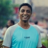
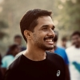

V P Senthil Kumar
RACE DIRECTOR
FCM 2025
Chennai Runners are thrilled to announce the 13th edition of our iconic event, Freshworks Chennai Marathon powered by Chennai Runners.
Building upon the resounding success of the previous edition, which marked a spectacular comeback for us,
we are gearing up for an even more exhilarating experience that promises to leave an indelible mark on the city and the world at large.
Over the years, the event has grown in stature and earned its place among the top marathons organized in the country.
The recent recognition from the ABBOTT WORLD MARATHON MAJORS is a testament.
This prestigious designation allows athletes who achieve the Automatic Qualifying Time for their respective age groups
to secure an immediate invitation to the 2025 AbbottWMM Wanda Age Group World Championships.

Yasir
PRESIDENT
Chennai Runners
As I step into the role of President of Chennai Runners, I would like to extend my gratitude to Dr. Lakshmi Sundar for her outstanding service. Her leadership, especially during the challenging covid years, has been exemplary. She has steered our group with grace and resilience, setting a high standard for us all. I am excited to receive the baton from her and continue the good work at Chennai Runners.
Our commitment to social responsibility remains strong, as demonstrated by our recent initiative to install mobile toilets for the Chennai city police across the city. This is just one of the many ways we strive to give back to our community.
Supporting women in running continues to be a cornerstone of Chennai Runners. Our chapters have undertaken various initiatives, such as the Women-Only Marathon Relay and the inclusion of a dedicated Women's Day run in our calendar. These efforts are designed to inspire and empower more women to embrace the joy of running.